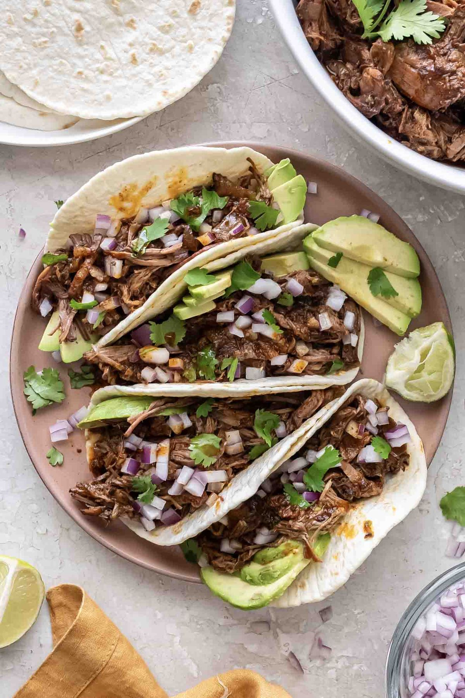

Slow Cooker Mexican Shredded Beef

- Meal
- Dinner
- Serves
- 6 (with leftovers)
- Protein
- beef
- Cook
- slow cooker · 20 min active / 4–9 hr total · easy
- Make-ahead / leftovers
- yes / yes
- Mediterranean
- no
- WW tier
- moderate
- Status
- Trying out (probation)
Kristine's barbacoa-style shredded beef: chuck roast braised all day with chipotle, lime, tomato paste, cumin, and oregano, then shredded into its juices. Tacos night one, burrito bowls or enchiladas from the leftovers.
Ingredients
- 1 medium yellow onion, chopped
- 4 cloves garlic, minced
- 1 cup low-sodium beef broth
- 1/4 cup fresh lime juice (2 limes)
- 3 Tbsp tomato paste
- 1–2 chipotle peppers in adobo, chopped, seeds removed (see Notes)
- 1 Tbsp adobo sauce from the can (or 1 tsp for kids)
- 1 Tbsp chili powder
- 1 Tbsp ground cumin
- 2 tsp dried oregano
- 1 tsp salt
- 1/2 tsp black pepper
- 3 lb boneless beef chuck roast
- To serve: tortillas or brown rice (house rule: always brown), chopped onion, cilantro, avocado, lime, black beans
Method
- In the slow cooker, stir together onion, garlic, broth, lime juice, tomato paste, chipotles, and adobo sauce.
- Mix the chili powder, cumin, oregano, salt, and pepper. Set the roast in the crock and rub the spice mix over it.
- Cover; cook on low 8–9 hours or high 4–5 hours until it shreds easily.
- Move the beef to a bowl, rest 5–10 minutes, and shred, discarding fat. Skim the fat off the liquid and stir enough liquid back into the meat to keep it juicy.
- Serve as tacos or over brown rice with beans and toppings.
Notes
- Kristine's 3 lb roast / serves 8 — kept as-is for 6 with a second meal of leftovers (enchiladas, nachos, burrito bowls).
- Kid heat: 2 chipotles is real heat. Use 1 chipotle with seeds removed and 1 tsp adobo; hot sauce at the table. Freeze the rest of the chipotle can in tablespoon blobs for the next batch.
- Chosen over a separate ropa vieja / barbacoa card — those would be near-clones of this (shredded Latin beef from a slow cooker).
- Red meat — counts toward the ≤2 cap. Mediterranean ✗ (red-meat-centric, no olive oil). moderate.